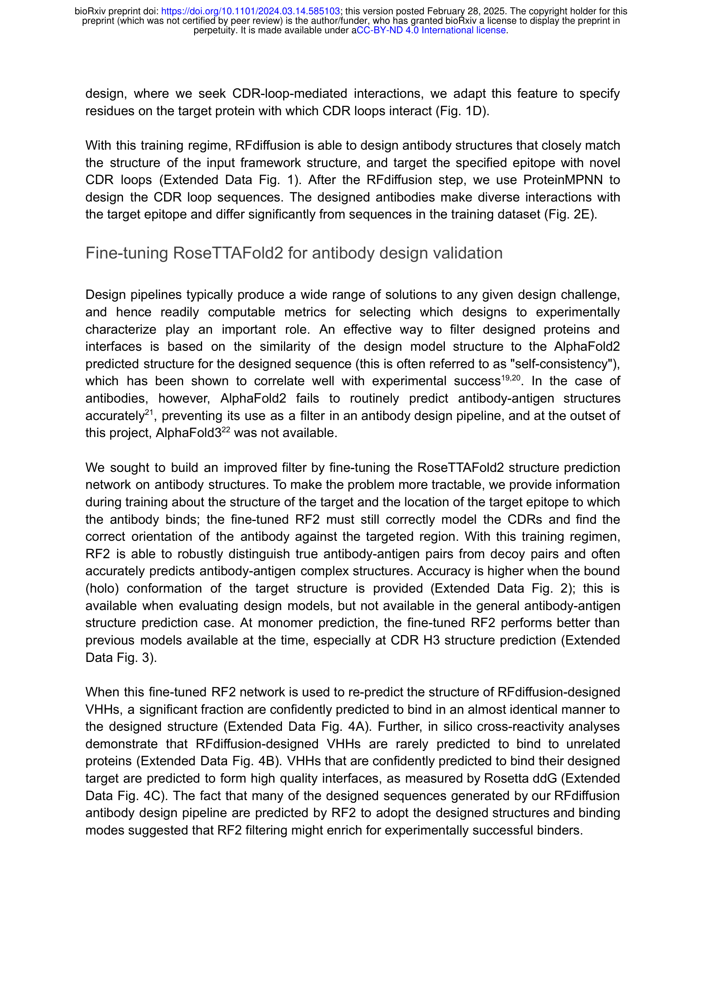
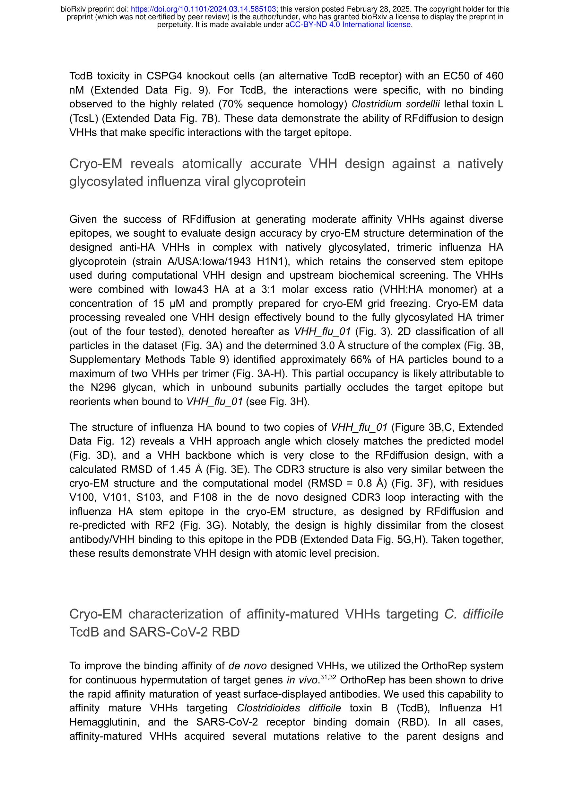
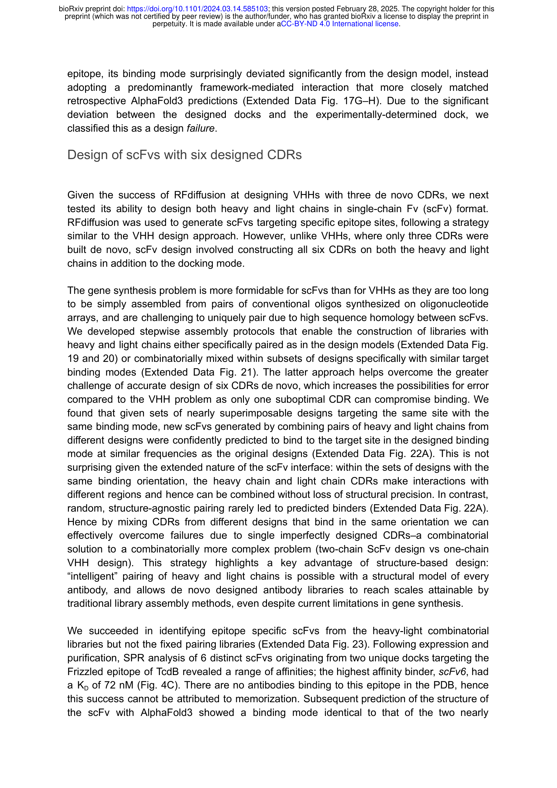
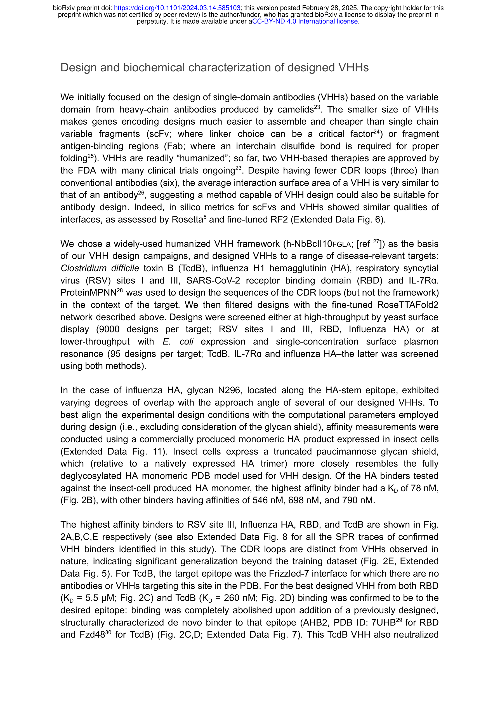

Figure 1
저자: Nathaniel R. Bennett, Joseph L. Watson, Robert J. Ragotte, Andrew J. Borst, DéJenaé L. See, Connor Weidle, Riti Biswas, Yutong Yu, Ellen L. Shrock, Russell Ault, Philip J. Y. Leung, Buwei Huang, Inna Goreshnik, John Tam, Kenneth D. Carr, Benedikt Singer, Cameron Criswell, Basile I. M. Wicky, Dionne Vafeados, Mariana Garcia Sanchez, Ho Min Kim, Susana Vázquez Torres, Sidney Chan, Shirley M. Sun, Timothy Spear, Yi Sun, Keelan O'Reilly, John M. Maris, Nikolaos G. Sgourakis, Roman A. Melnyk, Chang C. Liu, David Baker | 날짜: 2025 | Journal: bioRxiv | DOI: 10.1101/2024.03.14.585103
Figure 1
RFdiffusion을 항체 설계에 특화하여 fine-tuning함으로써, 사용자가 지정한 epitope에 원자 수준 정확도로 결합하는 de novo 항체(VHH 및 scFv)를 완전히 computational하게 설계한 최초의 연구이다. Cryo-EM 구조 분석으로 설계된 CDR 루프 구조와 결합 모드가 계산 모델과 원자 수준에서 일치함을 실험적으로 검증했다.

Figure 2

Figure 3

Figure 4

Figure 5
총평: 항체 설계의 패러다임을 근본적으로 전환시킬 잠재력을 가진 획기적 연구이다. RFdiffusion을 항체에 특화시켜 사용자 지정 epitope에 원자 수준 정확도로 결합하는 de novo 항체를 설계하고, cryo-EM으로 이를 검증한 최초의 사례로서 의의가 크다. 다만 낮은 실험 성공률과 affinity maturation 의존성은 향후 개선이 필요하며, AlphaFold3 기반 필터링과 all-atom 모델링의 통합이 이 분야의 다음 도약을 이끌 것으로 기대된다.